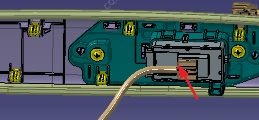
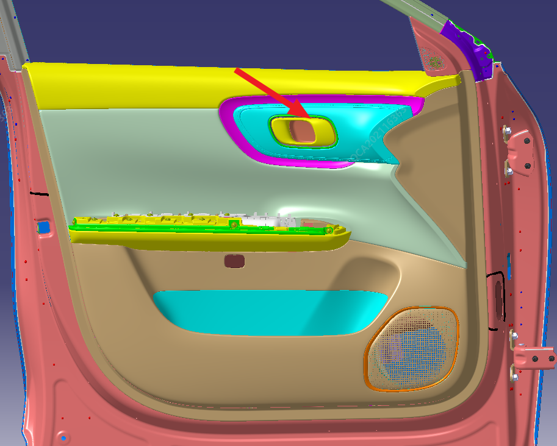
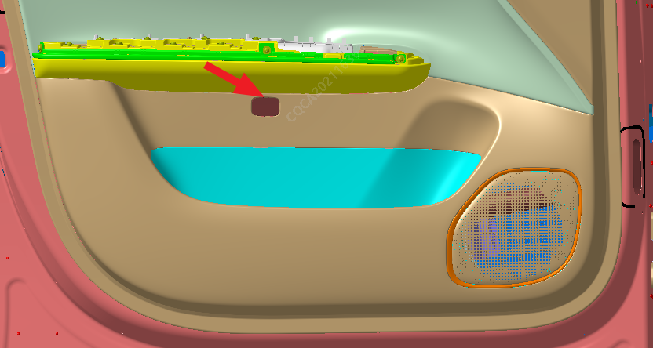
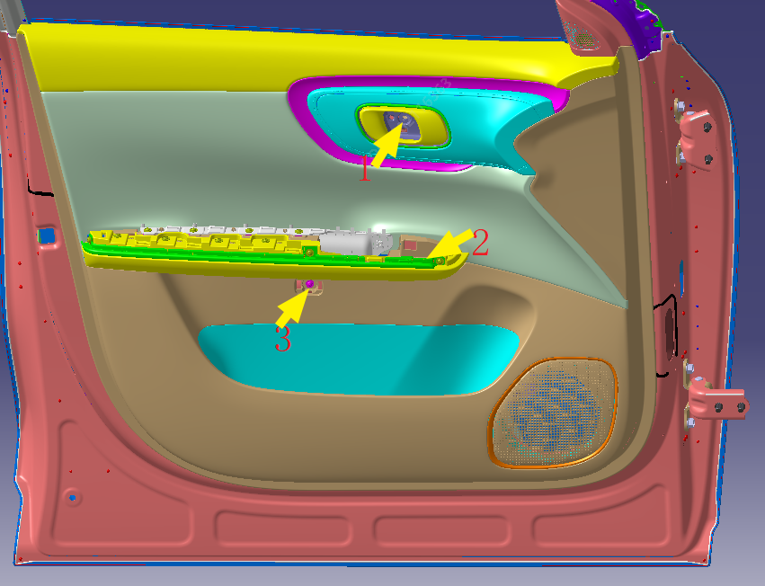
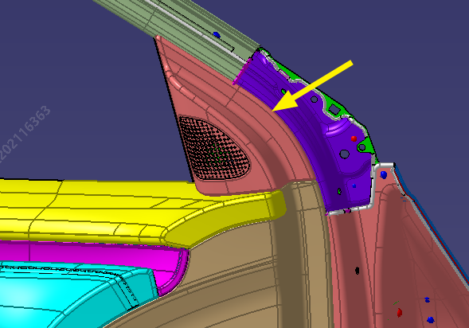
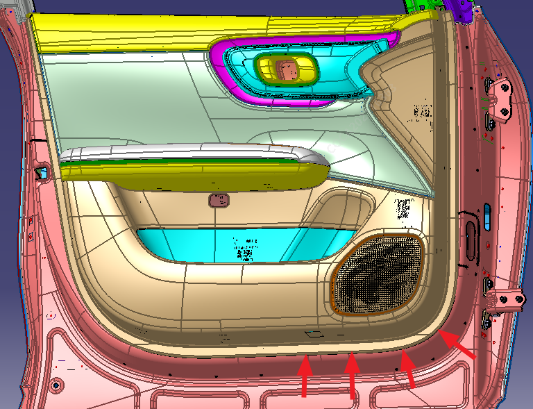
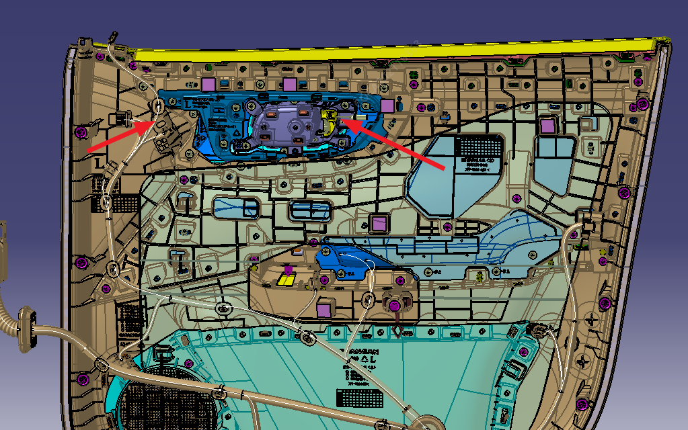
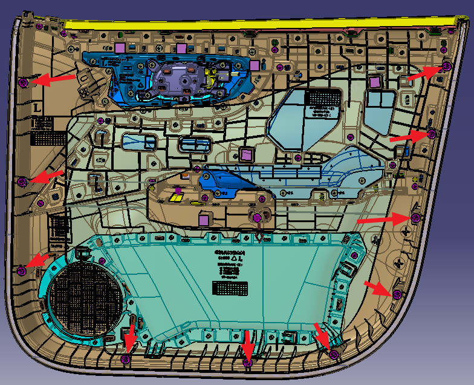

Снятие и установка облицовочной панели передней двери
Снятие
1. С помощью пластиковой лопатки поддеть узел панели управления стеклоподъемниками.

2. С помощью плоской отвертки поддеть штекер жгута проводов панели переключателей.

3. С помощью плоской отвертки поддеть и снять крышку винта внутренней ручки открывания двери

4. С помощью плоской отвертки снять крышку винта.

5. С помощью крестовой отвертки выкрутить крепежные винты (как показано на рис. 1, 2, 3).

6. С помощью крестовой отвертки поддеть и снять декоративную накладку треугольного окна передней двери (на некоторых комплектациях установлен высокочастотный динамик Звуковой сигнал, требуется демонтировать фиксирующий элемент жгута проводов)

7. С помощью пластиковой лопатки поддеть облицовочную панель передней двери.

8. Отсоединить штекер жгута проводов атмосферной подсветки и монтажный наконечник троса внутренней ручки открывания.

9. Снять пластиковые фиксаторы облицовочной панели передней двери, расположение фиксаторов показано на рисунке.

Установка
Установка выполняется в порядке, обратном снятию.
Внимание
Фиксаторы облицовочной панели передней двери являются одноразовыми элементами, при Установка необходимо заменить их новыми фиксаторами облицовочной панели передней двери.
Способы сборки и Снятие облицовочной панели правой передней двери и облицовочной панели левой передней двери одинаковы.